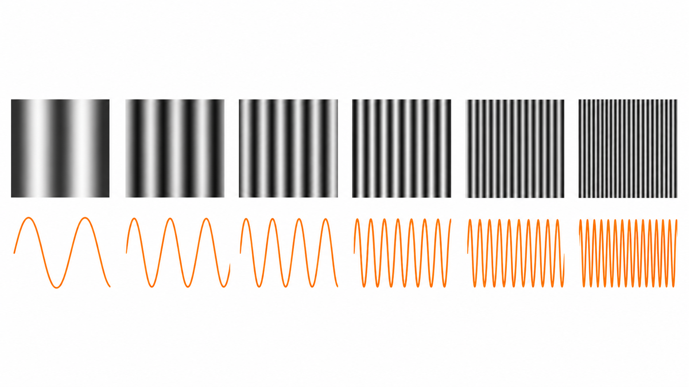
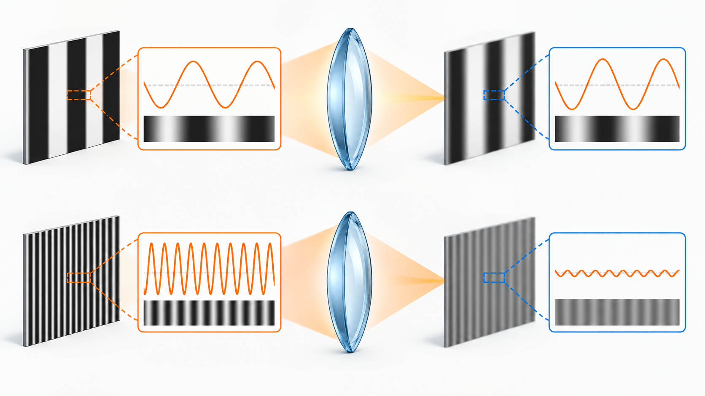
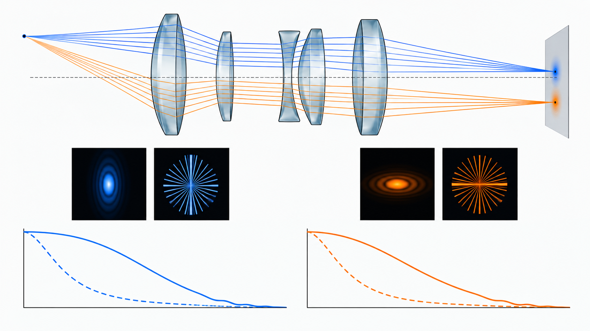
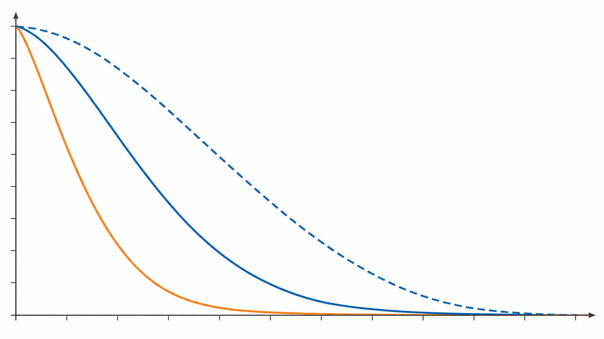

Livello intuitivo: Una lente può rendere bene le strisce larghe ma confondere quelle molto fitte. La MTF dice quanto contrasto sopravvive per ciascuna finezza del disegno.
Per essere maggiormente rigorosi: La MTF è il modulo della OTF, che comprende anche informazione di fase. La frequenza qui è spaziale, non il numero di oscillazioni luminose al secondo.
Frequenza spaziale
Un’alternanza lenta tra zone chiare e scure rappresenta una bassa frequenza spaziale. Barre molto fitte rappresentano un’alta frequenza spaziale. La frequenza spaziale si esprime, per esempio, in cicli per millimetro sul piano immagine oppure in cicli per grado nel sistema visivo.
Le strutture grandi corrispondono alle basse frequenze; i dettagli fini alle alte frequenze.

Dal punto al contrasto
Per un sistema lineare e invariante, la Optical Transfer Function è la trasformata di Fourier normalizzata della PSF:
Cosa Vuol Dire?
Livello intuitivo: La OTF traduce la PSF in una risposta alle frequenze spaziali e la normalizza rispetto alla frequenza zero.
Consente di descrivere come vengono trasferiti contrasto e fase di disegni via via più fini.
Per essere maggiormente rigorosi: Trasformata di Fourier della PSF d’intensità in un sistema lineare e invariante. fx e fy in cicli per unità di distanza; .
L’OTF è complessa. Il suo modulo è la Modulation Transfer Function:
Cosa Vuol Dire?
Livello intuitivo: La MTF è il modulo, cioè la grandezza, della OTF.
Misura il trasferimento del contrasto, ma non mostra gli spostamenti di fase: due OTF diverse possono avere la stessa MTF.
Per essere maggiormente rigorosi: MTF adimensionale; per una PSF d’intensità positiva normalizzata, il valore è tra 0 e 1.
La fase dell’OTF costituisce la Phase Transfer Function. Il nome corretto è Modulation Transfer Function, non “Modular Transfer Function”.
Contrasto
Per un pattern sinusoidale, la modulazione è:
Cosa Vuol Dire?
Livello intuitivo: Il contrasto è luminosità massima meno minima, diviso luminosità massima più minima.
Strisce bianche e nere ideali danno contrasto 1; livelli uguali danno 0.
Per essere maggiormente rigorosi: Contrasto di Michelson per pattern periodici. Intensità non negative e denominatore non nullo. Se e , .
La MTF confronta la modulazione nell’immagine con quella nell’oggetto:
Cosa Vuol Dire?
Livello intuitivo: A una data finezza del disegno, la MTF è contrasto dell’immagine diviso contrasto dell’oggetto.
Se l’oggetto ha contrasto 0,8 e l’immagine 0,4, la MTF è 0,5: resta metà del contrasto iniziale.
Per essere maggiormente rigorosi: Pattern sinusoidali, modello lineare e invariante, stessa frequenza riportata al medesimo piano tramite ingrandimento; M oggetto non nullo.
Per convenzione, la MTF normalizzata vale 1 alla frequenza zero. Per un’apertura circolare ideale, a fuoco e con imaging incoerente, diminuisce fino al cutoff. Non ogni primo zero è però un cutoff: con defocus o aberrazioni possono esserci zeri intermedi seguiti da una risposta nuovamente diversa da zero. Il cutoff teorico delimita la banda oltre la quale la risposta resta nulla.
Per un’apertura circolare ideale con imaging incoerente:
Cosa Vuol Dire?
Livello intuitivo: Il cutoff è il limite della banda di dettagli che il sistema può trasferire nel modello ideale, non semplicemente il primo punto basso incontrato sulla curva. MTF50 e MTF10 indicano invece dove il contrasto scende al 50% o al 10%: non sono sinonimi di cutoff.
Per essere maggiormente rigorosi: è la lunghezza d’onda nel vuoto e NA l’apertura numerica sul lato al cui piano è riferita la frequenza spaziale. Se è in millimetri, è in cicli/mm. La forma con il numero f vale approssimativamente in aria e in regime parassiale, con apertura numerica e numero f riferiti allo stesso cono immagine; per coniugati finiti va usato il numero f effettivo. Le frequenze di piani diversi vanno convertite tramite l’ingrandimento. Il limite coerente non è descritto da questa stessa formula.

Come leggere un grafico MTF
- Una curva più alta indica un migliore trasferimento del contrasto a quella frequenza.
- Le basse frequenze descrivono soprattutto contrasto e strutture ampie.
- Le alte frequenze descrivono la riproduzione dei dettagli fini.
- Curve sagittali e tangenziali separate possono segnalare astigmatismo, coma o comportamento diverso secondo l’orientamento.
Le curve dipendono da apertura, messa a fuoco, lunghezza d’onda, posizione nel campo e metodo di misura. Confrontare grafici senza controllare queste condizioni può portare a conclusioni sbagliate.


PSF, Strehl e MTF
PSF e OTF descrivono lo stesso sistema in due domini diversi: spazio e frequenza. Il rapporto di Strehl riassume il picco della PSF, mentre la MTF mostra come il contrasto cambia con la scala del dettaglio. Nessuno dei tre indicatori sostituisce completamente gli altri.